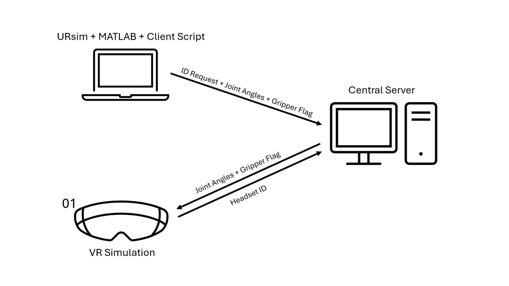
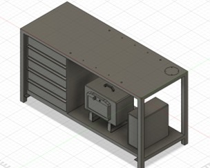
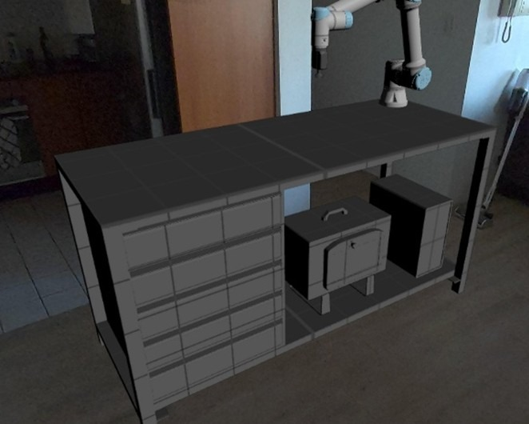
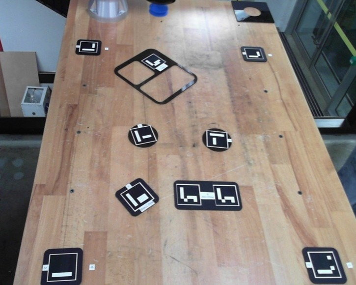
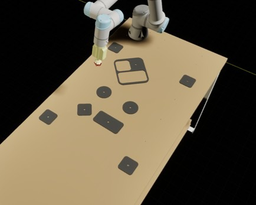

Developed a VR learning environment to make robotic arm training more accessible for engineering students
Robotics labs rely on expensive physical equipment, which limits student access. Lab time is restricted, hardware availability is low, and safety requirements can reduce hands-on practice. As a result, many students struggle to gain enough practical experience with robotic manipulators. This project explored how virtual reality (VR) could be used as an alternative training environment for robotics education. A VR system was developed to simulate a robotic arm workspace, allowing students to practise programming, interaction, and spatial understanding without requiring cumbersome physical hardware.
I developed and evaluated a virtual reality robotics simulator designed to improve access to laboratory robots in university courses. My responsibilities included building the VR simulation environment, TCP networking architecture, and robot interaction systems, while ensuring compatibility with existing robotics coursework tools such as URsim and MATLAB. I also designed and conducted student user studies to evaluate the system and used the feedback to guide iterative improvements.
To support multiple students simultaneously, I collaborated on the design of a TCP client–server architecture that allows several VR headsets to connect to a central server. Each headset is assigned a unique identifier so student code running on lab computers can send robot commands to the correct virtual robot instance. This system enables multiple independent simulations to run in parallel, allowing the platform to scale for classroom deployment.

To improve realism and usability, I implemented augmented reality passthrough using the Meta Quest headset cameras. This allows students to see the real laboratory while interacting with the virtual robot. The physical UR5e workstation and assignment objects were modelled in CAD and recreated in the simulation, allowing students to test coursework tasks in a workspace that closely mirrors the real robot setup.


To ensure the simulator could support real coursework, I implemented compatibility with a UNSW robotics assignment from MTRN4230. The goal was to allow students to run their assignment code in VR and observe behaviour that closely matches the physical UR5e robot. All assignment objects and obstacles were recreated in CAD and imported into the simulation, and interaction logic was added so the virtual vacuum gripper could pick up nearby objects. The workspace was also modelled using the same board configuration used by the assignment so students could run their path planning and computer vision code directly within the simulation environment.


This project strengthened my skills in Unreal Engine 5 development. I also gained experience deploying the simulator as an Android APK for Meta Quest headsets, configuring the Unreal Android environment and debugging device issues. Additionally, the study provided experience with engineering research standards, including ethics approval, structured user testing, and analysing feedback to guide iterative development.